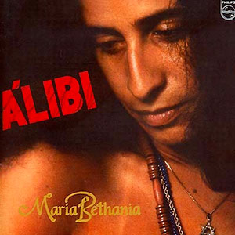

Maria Bethânia
2,7M seguidores
Músicas Populares
- Cheiro de Amor
- Reconvexo
- As Canções Que Você Fez Pra Mim
- Fera Ferida
- Samba da Bênção
Álbuns

Álibi
Mel

Pássaro Proibido
Playlists
- Coleção MPB
- This is Maria Bethânia
- O Melhor do MPB
Sobre Maria Bethânia
Maria Bethânia Viana Teles Veloso OMC (Santo Amaro, 18 de junho de 1946) é uma cantora e compositora brasileira. Natural de Santo Amaro, Bahia, iniciou sua carreira no Rio de Janeiro em 1964 com o espetáculo "Opinião", sendo considerada "A Rainha da Música Brasileira". Devido à sua popularidade, com apresentações por todo o país, e à popularidade de seu single de 1965 "Carcará", a artista se tornou uma estrela no Brasil. Ela é a artista mais homenageada da história do Prêmio da Música Brasileira.